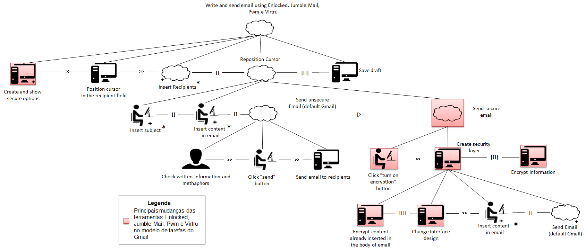
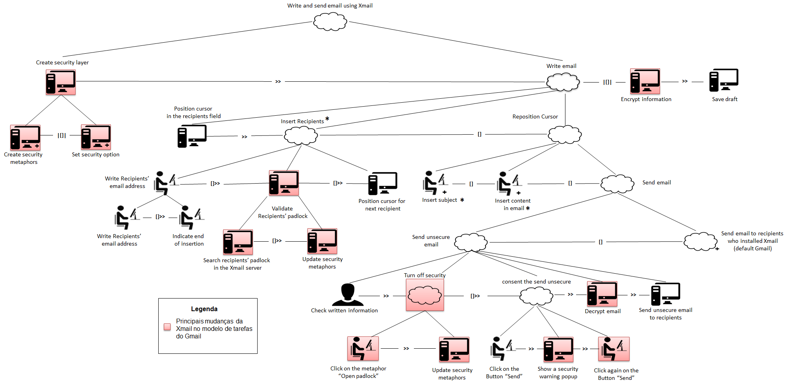
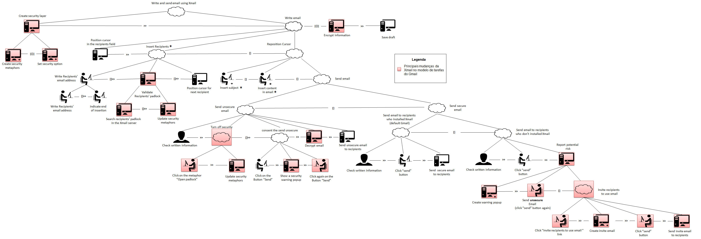

Usabilidade nas Soluções de E-mail Seguro - O Modelo Mental de Segurança do Usuário

Figura 4.14: Modelo de tarefas das ferramentas Enclocked, Jumble Mail, Pwm e Virtru da tarefa “escrever e enviar e-mail” usando CTT.
Figura 4.15: Modelo de tarefas da ferramenta SecureMail escrever e enviar e-mail” usando CTT.

Figura 3.2: Parte do modelo de tarefas do Xmail destacando as principais mudança entre tal e o modelo do provedor Gmail

Modelo de tarefas do Xmail (Completo)